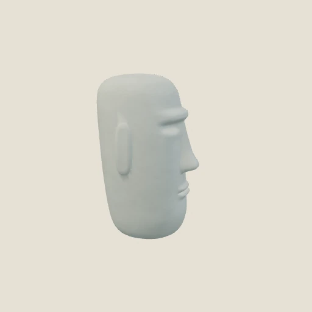
モアイくん
おこていゆについてまわる、思い入れのあるおもちゃ。受ける負担をやわらげ、攻撃を後押ししてくれます。
備えを変えると、冒険の手ざわりも少し変わります。
現在のWebベータ版では、ここで紹介するサポートもちもの3種・防御もちもの3種を、最初からすべて所持しています。コレクションで選んで装備できます。

おこていゆについてまわる、思い入れのあるおもちゃ。受ける負担をやわらげ、攻撃を後押ししてくれます。
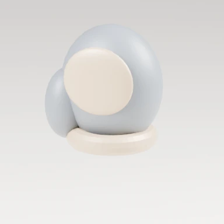
小さな手に合う、かたいグローブ。相手に与えるダメージを高めたいときのおともに。
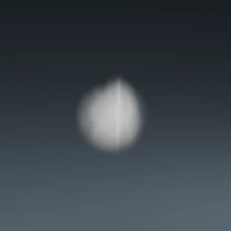
ぼんやり白く光る気の塊。おこていゆの基礎的な力を幅広く支えます。
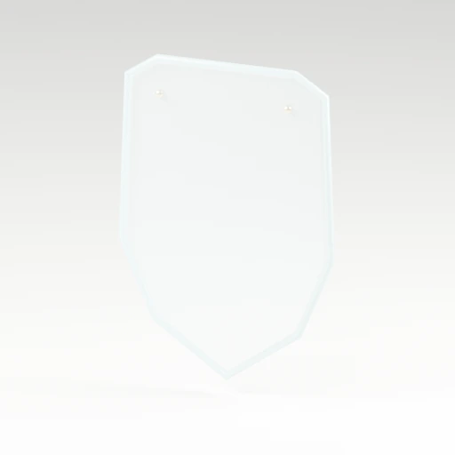
透明な板の盾。戦闘では体の前に浮かび、受けるダメージをやわらげます。
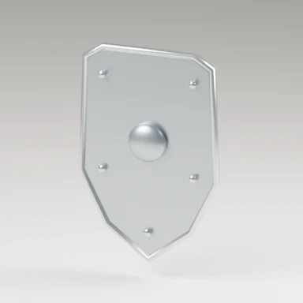
重厚な鉄の盾。守りに優れますが、その重さで動きは少し重くなります。
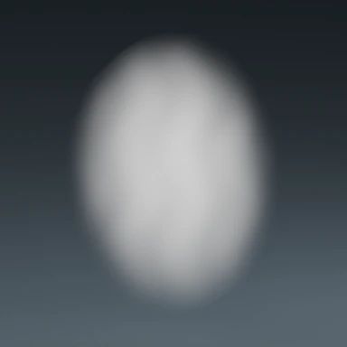
白いモヤのような盾。受けるダメージを抑えながら、攻撃も後押しします。
相手の珍生物をすべて疲れさせて戦闘を終えると、戦った相手ごとにオーラを入手するチャンスがあります。複数のオーラを一度に得ることもあります。おこていゆが先に疲れてしまった場合は、途中で相手を疲れさせていてもオーラは手に入りません。
パトロールだけでなく、訓練で手に入れたオーラも同じように加算されます。コレクションの詳細にある「累計入手」は、育成に使った分も含めた取得個数です。最大レベルに育った後も、この個数は増えていきます。「種類数」は、持っているオーラの種類を数えたものです。
初めて手に入れたオーラはレベル1でコレクションに加わります。同じオーラを重ねて集めると育っていきます。おこていゆのオーラは最初から所持しています。装備を変え、いつものおこていゆとの違いを観察してみてください。
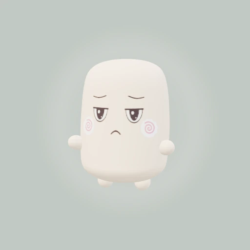
いつもの白い光で、基礎の力を広く支えます。
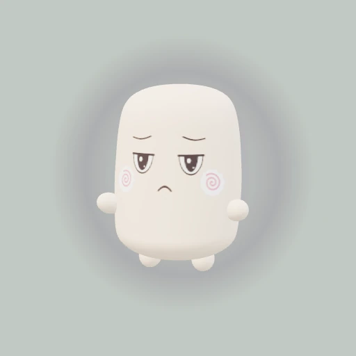
この珍生物の特徴を力に変えるオーラ。どんな冒険のおともに合うか、装備して確かめてみましょう。
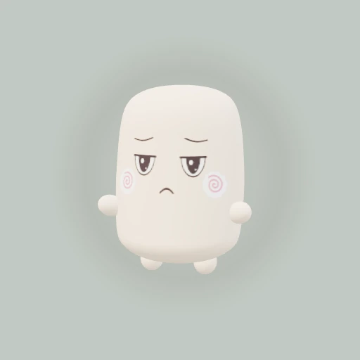
この珍生物の特徴を力に変えるオーラ。どんな冒険のおともに合うか、装備して確かめてみましょう。

この珍生物の特徴を力に変えるオーラ。どんな冒険のおともに合うか、装備して確かめてみましょう。

この珍生物の特徴を力に変えるオーラ。どんな冒険のおともに合うか、装備して確かめてみましょう。
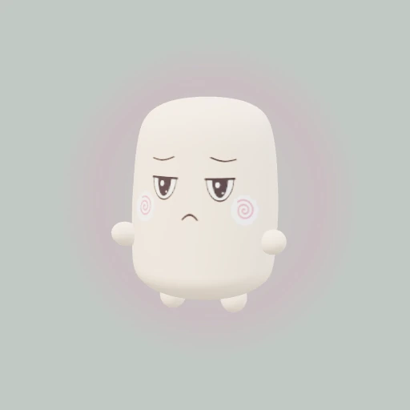
この珍生物の特徴を力に変えるオーラ。どんな冒険のおともに合うか、装備して確かめてみましょう。
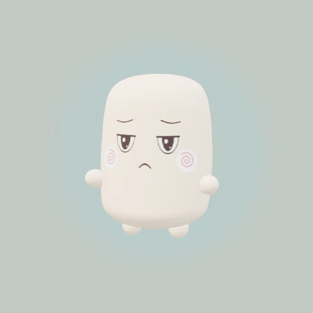
この珍生物の特徴を力に変えるオーラ。どんな冒険のおともに合うか、装備して確かめてみましょう。

この珍生物の特徴を力に変えるオーラ。どんな冒険のおともに合うか、装備して確かめてみましょう。
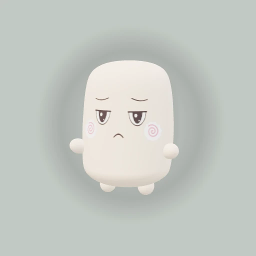
この珍生物の特徴を力に変えるオーラ。どんな冒険のおともに合うか、装備して確かめてみましょう。

この珍生物の特徴を力に変えるオーラ。どんな冒険のおともに合うか、装備して確かめてみましょう。
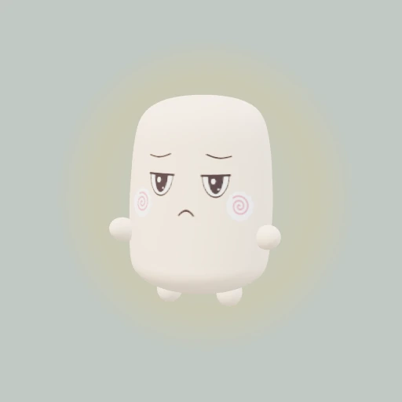
この珍生物の特徴を力に変えるオーラ。どんな冒険のおともに合うか、装備して確かめてみましょう。
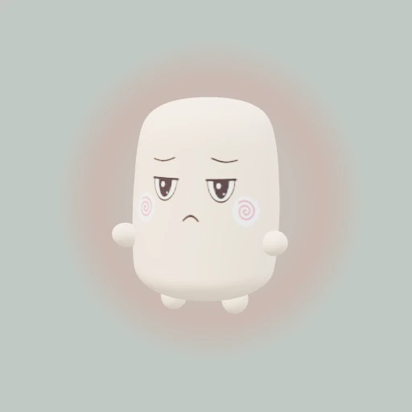
この珍生物の特徴を力に変えるオーラ。どんな冒険のおともに合うか、装備して確かめてみましょう。
ちゃぶ台の食べ物や飲み物を味わうのも、おこていゆの楽しみ。冷蔵庫には冒険に備えた食べ物が入っています。
焼いたベーコン、パン、ハンバーグ、プリン。飲み物はコップのソーダと、ストロー付きのソーダがあります。つかんで食べたり、フォークやスプーンを使ったりする様子も眺めてみてください。